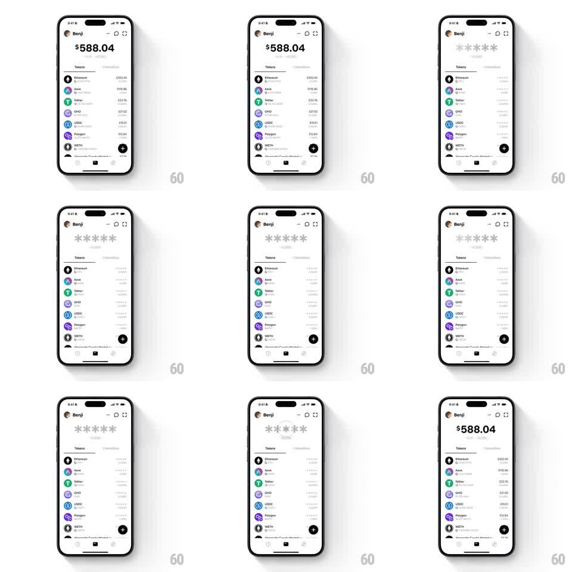

Media
Frame-by-frame

Rebuild this interaction 1:1: Family's stealth mode - toggling privacy on the light Benji wallet home crossfades every balance ("$588.04" total and all token values) into shimmering gray asterisks, then back to real numbers on toggle off.

Rebuild this interaction 1:1: Family's stealth mode - toggling privacy on the light Benji wallet home crossfades every balance ("$588.04" total and all token values) into shimmering gray asterisks, then back to real numbers on toggle off.
## Integration
Integration: stack-agnostic spec - springs given as stiffness/damping, timed motions as duration + curve; map every value to your framework and animation library of choice.
## Scene
Light wallet home: Benji header with a privacy toggle in the top bar, big total "$588.04", Tokens list (Ethereum $352.46, Aave $118.96, Tether $33.76, GHO $21.02, USDC $10.51, Polygon $12.64, WETH, Worldcoin...), bottom bar with black "+" button. Stealth state: the total and every fiat/crypto value replaced by gray asterisks ("******"); token names, logos, and percents stay visible.
## Motion spec
Pattern: staggered value-to-asterisk crossfade with shimmer.
- Toggle on: the total's digits blur and crossfade into asterisks (250ms), then the list values cascade top to bottom (30ms per row, 200ms each) - each value fades its digits out as asterisks fade in at the same width.
- A shimmer sweep runs across the asterisk groups (a light gradient traveling left to right, 1.2s loop, opacity 0.3 -> 0.6) - the masked state feels alive, not static.
- Token logos and names stay at full opacity throughout; only values mask.
- Toggle off: the cascade reverses bottom to top (30ms rows), digits crossfading back in with a brief blur settle (200ms), shimmer stopping immediately.
## Calibration
- Asterisk count is constant (six) regardless of the masked value's length.
- Asterisks render in the same font/size as the value they replace, colored gray.
## Reduced motion
Values crossfade without shimmer or cascade.
## Don't miss
- Percent-change indicators stay visible (they reveal direction, not amount).
- The eye/toggle icon in the header flips state with a 150ms crossfade.